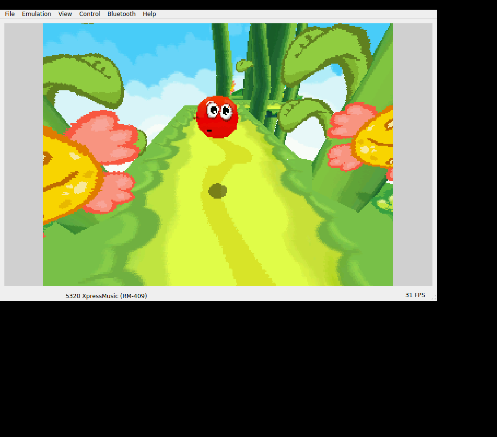

Bounce took us from classic N-Gage into a newer phone environment. We kept the Ashen-derived Android EKA2L1 core and prepared the Nokia 5320 software stack. There was more to bring along than the game file.BV01BV08
A jump on the host.
The Linux route reached the original title, Keys screen and 3D opening. An initial generic action-key hypothesis was replaced with the device’s actual gaming-key mapping. The corrected E4 input made the ball jump.BV04BV05

The original Bounce ball airborne above its ground shadow after the corrected E4 Jump input. Retained Linux EKA2L1 host screenshot; this does not show the repaired Android APK.
Open the image for the full original view.
BV90That host ran a different EKA2L1 build from the inherited Android core. A ball in the Linux window could not certify the packaged phone renderer.BV05
Counters over black.
On the 0.1.0 phone build, we had initialization, a surface, input dispatch and a game-setting file. The viewport stayed black while the log filled with program/uniform errors. The APK seed had left out the entire resources directory, including eight core GLES shaders.BV02
We restored 31 exact Ashen support resources before JNI startup on every launch, including installations where ready-v1 already existed. We could repair that directory in place and keep the player’s game files and saves.BV03
Shader checks and a rendered host fixture passed, while the repaired phone run remained a separate next result. Reporting also kept both the log head and tail so a flood of repeated errors could not bury the first useful failure.BV03BV06
About these records
Bounce uses the dependency-bearing EKA2L1/Nokia stopgap, not a completed independent runtime. The Linux jump, Android black viewport and repaired host/framework checks are distinct records. The image is an unchanged Linux window from the original game, not proof the corrected Android APK was played. Readiness repair preserves saves and does not overwrite the full seed.
The receipts
Selected source lines, investigation notes and recorded feedback. Open a receipt for the original context and scope.
BV01 / Ashen core, newer Nokia environmentCheckpoint investigation notes
Source: Bounce_Boing_Voyage_Bridge_v0.1.1_PRIVATE_CHECKPOINT.zip / Bounce_Boing_Voyage_Bridge_v0.1.1_PRIVATE/README_FIRST.txt · selected lines 66–73
WHAT WAS REUSED Ashen v0.1.3's unmodified Android EKA2L1 core, JNI callbacks, lifecycle, first-install save protection and independent reporting. Its Pocket Kingdom/ Shadowkey runtime lineage is retained in provenance. The original N-Gage Symbian 6 firmware was replaced with the required Nokia 5320 Symbian 9.3 FP2 files and N-Gage 2.0 service dependencies. This is a newer platform generation. Actual Wakka Bridge Gameplay UI Kit v1.1.2 source is compiled into the APK. Its source/JAR/tests are preserved in app/ui-kit/.
BV08 / EKA2L1 and original environment creditsCheckpoint investigation notes
Source: Bounce_Boing_Voyage_Bridge_v0.1.1_PRIVATE_CHECKPOINT.zip / Bounce_Boing_Voyage_Bridge_v0.1.1_PRIVATE/THIRD_PARTY_NOTICES.txt · selected lines 3–12
EKA2L1 Symbian/N-Gage runtime by the EKA2L1 contributors. https://github.com/EKA2L1/EKA2L1 GPL-3.0-or-later. License and recovered source snapshot are in upstream/. Unmodified native binary identity/provenance: upstream/PROVENANCE.json. Bounce Boing Voyage, the Nokia device environment and N-Gage service retain their respective original owners' rights. The supplied .n-gage was preserved unchanged. Additional device/service inputs are recorded in provenance. The separate bridge frontend and app-registration resource do not confer ownership over original game, artwork, firmware or service materials.
BV04 / Original gaming keys corrected the failed initial hypothesisCheckpoint investigation notes
Source: Bounce_Boing_Voyage_Bridge_v0.1.1_PRIVATE_CHECKPOINT.zip / Bounce_Boing_Voyage_Bridge_v0.1.1_PRIVATE/VERIFICATION.txt · selected lines 25–39
CONTROLS — PRIMARY EVIDENCE, INCLUDING A CONSEQUENT CORRECTION Original Options > Keys: movement is the controller, Jump is gaming A, Change form is gaming B. The controller center is distinct from numeric 5. The device profile is decoded from original C:/private/10202be9/20001079.cre. For /hardware/input/devices/0/orientation_270: primaryactionkey (0x3b000f) = 228 = 0xE4 secondaryactionkey (0x3b0011) = 229 = 0xE5 keytranslationdata maps E4 to RGA 0x01000000, E5 to 0x02000000. The game's saved settings confirm orientation=3, key_action_270=80 (gaming A) and key_change_form_270=81 (gaming B). The JNI sink accepts scan codes directly. The initial generic Application0/Application1 (B4/B5) hypothesis did not produce jump and was replaced BEFORE delivery. No B4/B5 A/B binding is shipped. Native profile and real ngiinput/game disassembly are retained as evidence. Other mappings: arrows 10/11/0E/0F; center A7; softkeys A4/A5; Clear 1; digits ASCII and # 7F. All are runtime scan codes, not Android key codes.
BV05 / Original Linux game and corrected jump, with different-core boundaryCheckpoint investigation notes
Source: Bounce_Boing_Voyage_Bridge_v0.1.1_PRIVATE_CHECKPOINT.zip / Bounce_Boing_Voyage_Bridge_v0.1.1_PRIVATE/VERIFICATION.txt · selected lines 75–90
ORIGINAL EXECUTION — LINUX HOST Official EKA2L1 master-416fd7994 AppImage, Xvfb/software OpenGL, Nokia 5320. Genuine title/menu, Options/Keys, intro, native loading, 3D opening level and controller movement and the corrected native E4 jump were observed. The airborne ball and separate ground shadow are visible in host-correct-E4-in-game.png. Up plus Right produces simultaneous native movement; original camera follows that movement. Original movement and Jump A tutorials and original pause/menu were reached. See actual host screenshots. The earlier F1/F2 host keyboard routing was bypassed with dedicated host-only letter aliases to the same native softkey codes; Android does not use Qt keys. No game code was patched for this test. An earlier online Rankings experiment crashed the Linux host; logs are kept as earlier-configuration evidence, not represented as a failure reproduced against the finished Android APK. Online/Arena features remain unverified. The host runtime is a different build from the recovered Android native core. No claim of equivalence follows from seeing the game on Linux.
BV90 / Historical image / Bounce: Boing VoyageHistorical host capture
Source: Bounce_Boing_Voyage_Bridge_v0.1.1_PRIVATE/evidence/host-correct-E4-in-game.png
Retained historical host output. Original emulator chrome, where present, is part of the unchanged source image. No phone capture or phone performance is inferred.
Unchanged historical image. Source member: Bounce_Boing_Voyage_Bridge_v0.1.1_PRIVATE/evidence/host-correct-E4-in-game.png SHA-256: 1251f11069184a441fbd248b9070e83c8712b9cc23d273d654a850997ad765b1 The original Bounce ball airborne above its ground shadow after the corrected E4 Jump input. Retained Linux EKA2L1 host screenshot; this does not show the repaired Android APK. Scope: Historical Linux original-game execution in Nokia5320 guest environment; different EKA2L1 build from inherited Android core.
BV02 / The phone black viewport and omitted shader resourcesCheckpoint investigation notes
Source: Bounce_Boing_Voyage_Bridge_v0.1.1_PRIVATE_CHECKPOINT.zip / Bounce_Boing_Voyage_Bridge_v0.1.1_PRIVATE/VERIFICATION.txt · selected lines 92–114
PHONE v0.1.0 FAILURE / v0.1.1 REPAIR The returned Samsung SM-S938U / Android 17 API 37 video shows a black viewport. Its genuine manual report confirms native initialization, original launch request, one native surface connection, surface 1028x771 and 156 dispatched input transitions. These counters are not FPS or gameplay-success evidence. The report lists original-game settings created in the guest, suggesting the original process executed beyond registration. Its native log tail is flooded with glUseProgram error 1281 and glUniform error 1282. Initial log diagnostics were displaced from the old tail-only report. The v0.1.0 packaged seed has no resources/ directory. The actual native core references eight external resources//*.vert/*.frag shader files. Upstream Android packaging explicitly copies the GLES shaders into resources/. The working supplied Ashen seed contains them, along with audio banks and upscale resources; all 31 are now restored byte-identically in a separate ZIP. All eight base shaders match the preserved GLES upstream source. RendererAssets installs/repairs and SHA-256 verifies only resources/ before JNI, even with ready-v1 already present. Guest seed, original files, config, native core and shared UI kit are unchanged. Same package/signing certificate, version code 2; intended as an in-place update. Native reports now include the first 64 KiB and last 128 KiB rather than losing startup errors in a flood. Phone evidence and exact restored-file hashes are retained in evidence/.
BV03 / Repair before every startup without replacing savesCheckpoint investigation notes
Source: Bounce_Boing_Voyage_Bridge_v0.1.1_PRIVATE_CHECKPOINT.zip / Bounce_Boing_Voyage_Bridge_v0.1.1_PRIVATE/README_FIRST.txt · selected lines 15–33
v0.1.1 restores all 31 original renderer/audio resources from the working Ashen v0.1.3 seed, byte-for-byte. An independent resources/ installer verifies SHA-256 before native startup on EVERY launch. It runs even when the old ready-v1 guest marker already exists, and repairs missing/corrupt core resources. The existing guest seed, game files, firmware, UI kit and native core are unchanged. The installer only writes resources/; it does not modify guest saves, settings or configuration. Reports now retain the start AND end of the native log, so repeated errors cannot hide startup shader diagnostics. INSTALL THIS AS AN UPDATE over v0.1.0. The package and private signing key are the same, and version code is 2. Do not uninstall or clear app data to apply it. The actual upgrade path preserves existing guest files in the Android framework regression. All five core GLES programs compile/link/use in host Mesa GLES, and the screen sprite shader produces 256 exact fixture pixels. These checks validate the repair; v0.1.1 still needs a physical-phone test. The supplied original executable previously booted its title, introduction, Options > Keys and 3D opening level in a different Linux EKA2L1 build. That host evidence does not establish Android gameplay or audio success.
BV06 / Keep both ends of the native logCheckpoint investigation notes
Source: Bounce_Boing_Voyage_Bridge_v0.1.1_PRIVATE_CHECKPOINT.zip / Bounce_Boing_Voyage_Bridge_v0.1.1_PRIVATE/CHANGES_v0.1.1.txt · selected lines 3–21
Repair the black viewport reported on the first phone build. Root cause found: v0.1.0 omitted the external renderer resources needed by its unchanged native core. Native initialization/input counters continued, but shader program/uniform calls failed repeatedly. Restore all 31 original resources from the working supplied Ashen seed, including all eight GLES shader files. Verify immutable resources before native startup, independently of ready-v1; repair individual missing/corrupt files. Only resources/ is written by this migration. Guest seed and game data are unchanged. Retain the same private update signing key; version code 2. Keep the beginning and end of the native log in reports so repeated driver errors cannot displace the initial shader failure. Include resource state. Validation: 497 package/integrity checks; four production Android Activity regressions including actual ready-v1 upgrade preservation; all five renderer programs compile/link/use in Mesa GLES, with 256 exact screen-sprite pixels. No v0.1.1 phone rendering or audio success has yet been observed.